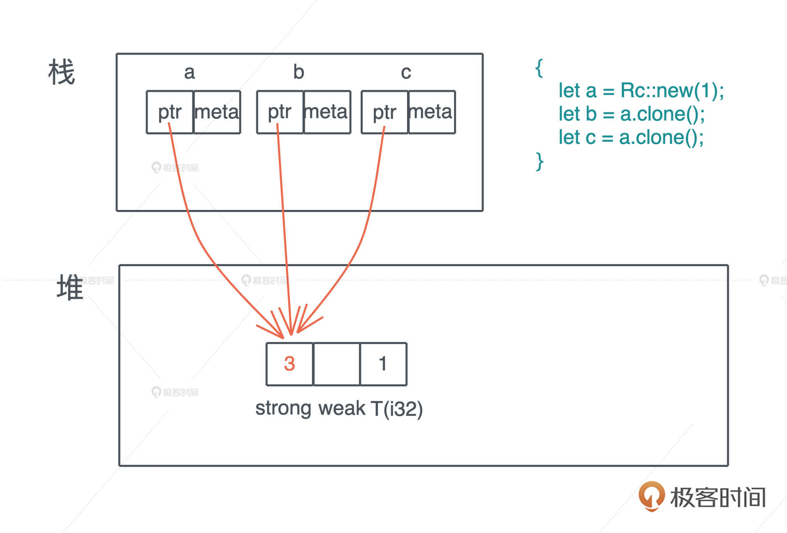
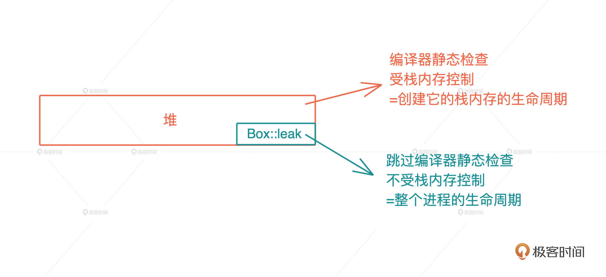
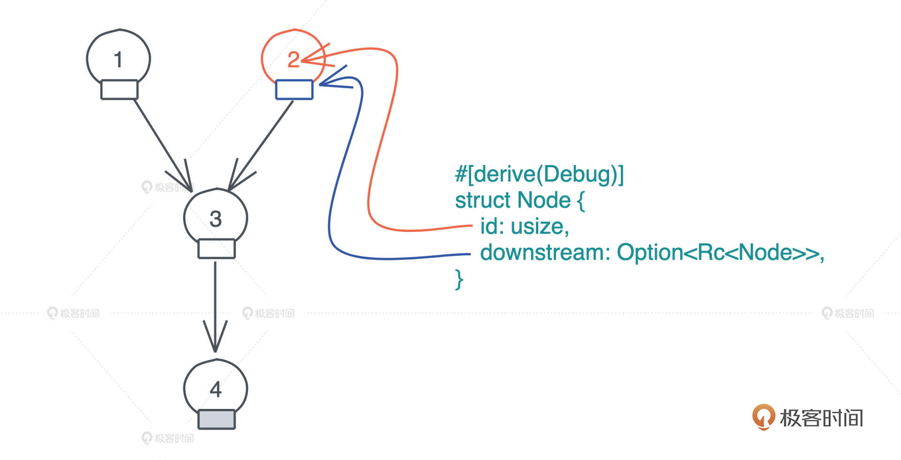
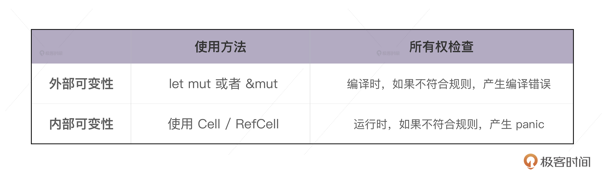
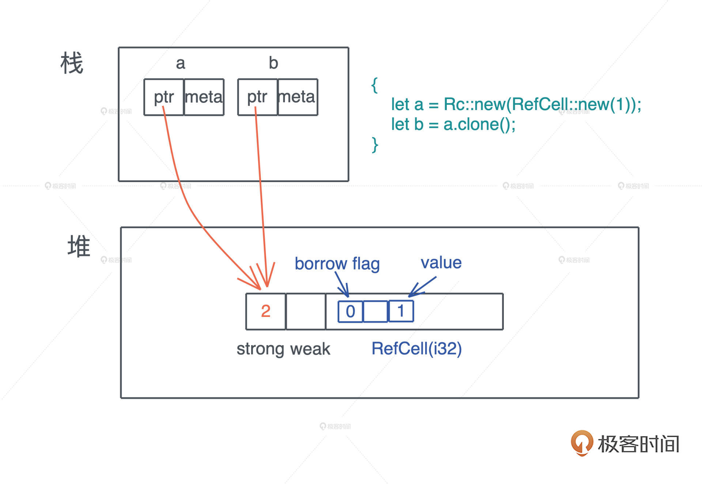
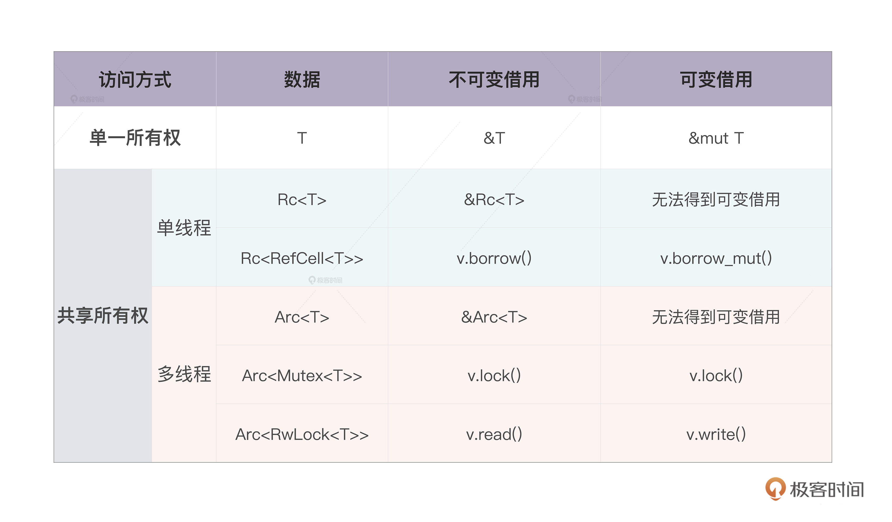

- 00 开篇词 让Rust成为你的下一门主力语言.md
- 01 内存：值放堆上还是放栈上，这是一个问题.md
- 02 串讲：编程开发中，那些你需要掌握的基本概念.md
- 03 初窥门径：从你的第一个Rust程序开始！.md
- 04 get hands dirty：来写个实用的CLI小工具.md
- 05 get hands dirty：做一个图片服务器有多难？.md
- 06 get hands dirty：SQL查询工具怎么一鱼多吃？.md
- 07 所有权：值的生杀大权到底在谁手上？.md
- 08 所有权：值的借用是如何工作的？.md
- 09 所有权：一个值可以有多个所有者么？.md
- 10 生命周期：你创建的值究竟能活多久？.md
- 11 内存管理：从创建到消亡，值都经历了什么？.md
- 12 类型系统：Rust的类型系统有什么特点？.md
- 13 类型系统：如何使用trait来定义接口？.md
- 14 类型系统：有哪些必须掌握的trait？.md
- 15 数据结构：这些浓眉大眼的结构竟然都是智能指针？.md
- 16 数据结构：Vec_T_、&[T]、Box_[T]_ ，你真的了解集合容器么？.md
- 17 数据结构：软件系统核心部件哈希表，内存如何布局？.md
- 18 错误处理：为什么Rust的错误处理与众不同？.md
- 19 闭包：FnOnce、FnMut和Fn，为什么有这么多类型？.md
- 20 4 Steps ：如何更好地阅读Rust源码？.md
- 21 阶段实操（1）：构建一个简单的KV server-基本流程.md
- 22 阶段实操（2）：构建一个简单的KV server-基本流程.md
- 23 类型系统：如何在实战中使用泛型编程？.md
- 24 类型系统：如何在实战中使用trait object？.md
- 25 类型系统：如何围绕trait来设计和架构系统？.md
- 26 阶段实操（3）：构建一个简单的KV server-高级trait技巧.md
- 27 生态系统：有哪些常有的Rust库可以为我所用？.md
- 28 网络开发（上）：如何使用Rust处理网络请求？.md
- 29 网络开发（下）：如何使用Rust处理网络请求？.md
- 30 Unsafe Rust：如何用C++的方式打开Rust？.md
- 31 FFI：Rust如何和你的语言架起沟通桥梁？.md
- 32 实操项目：使用PyO3开发Python3模块.md
- 33 并发处理（上）：从atomics到Channel，Rust都提供了什么工具？.md
- 34 并发处理（下）：从atomics到Channel，Rust都提供了什么工具？.md
- 35 实操项目：如何实现一个基本的MPSC channel？.md
- 36 阶段实操（4）：构建一个简单的KV server-网络处理.md
- 37 阶段实操（5）：构建一个简单的KV server-网络安全.md
- 38 异步处理：Future是什么？它和async_await是什么关系？.md
- 39 异步处理：async_await内部是怎么实现的？.md
- 40 异步处理：如何处理异步IO？.md
- 41 阶段实操（6）：构建一个简单的KV server-异步处理.md
- 42 阶段实操（7）：构建一个简单的KV server-如何做大的重构？.md
- 43 生产环境：真实世界下的一个Rust项目包含哪些要素？.md
- 44 数据处理：应用程序和数据如何打交道？.md
- 45 阶段实操（8）：构建一个简单的KV server-配置_测试_监控_CI_CD.md
- 46 软件架构：如何用Rust架构复杂系统？.md
- 加餐 Rust2021版次问世了！.md
- 加餐 代码即数据：为什么我们需要宏编程能力？.md
- 加餐 宏编程（上）：用最“笨”的方式撰写宏.md
- 加餐 宏编程（下）：用 syn_quote 优雅地构建宏.md
- 加餐 愚昧之巅：你的Rust学习常见问题汇总.md
- 加餐 期中测试：参考实现讲解.md
- 加餐 期中测试：来写一个简单的grep命令行.md
- 加餐 这个专栏你可以怎么学，以及Rust是否值得学？.md
- 大咖助场 开悟之坡（上）：Rust的现状、机遇与挑战.md
- 大咖助场 开悟之坡（下）：Rust的现状、机遇与挑战.md
- 特别策划 学习锦囊（一）：听听课代表们怎么说.md
- 特别策划 学习锦囊（三）：听听课代表们怎么说.md
- 特别策划 学习锦囊（二）：听听课代表们怎么说.md
- 用户故事 绝望之谷：改变从学习开始.md
- 用户故事 语言不仅是工具，还是思维方式.md
- 结束语 永续之原：Rust学习，如何持续精进？.md
09 所有权：一个值可以有多个所有者么？
你好，我是陈天。
之前介绍的单一所有权规则，能满足我们大部分场景中分配和使用内存的需求，而且在编译时，通过 Rust 借用检查器就能完成静态检查，不会影响运行时效率。
但是，规则总会有例外，在日常工作中有些特殊情况该怎么处理呢？
- 一个有向无环图（DAG）中，某个节点可能有两个以上的节点指向它，这个按照所有权模型怎么表述？
- 多个线程要访问同一块共享内存，怎么办？
我们知道，这些问题在程序运行过程中才会遇到，在编译期，所有权的静态检查无法处理它们，所以为了更好的灵活性，Rust 提供了运行时的动态检查，来满足特殊场景下的需求。
这也是 Rust 处理很多问题的思路：编译时，处理大部分使用场景，保证安全性和效率；运行时，处理无法在编译时处理的场景，会牺牲一部分效率，提高灵活性。后续讲到静态分发和动态分发也会有体现，这个思路很值得我们借鉴。
那具体如何在运行时做动态检查呢？运行时的动态检查又如何与编译时的静态检查自洽呢？
Rust 的答案是使用引用计数的智能指针：Rc（Reference counter） 和 Arc（Atomic reference counter）。这里要特别说明一下，Arc 和 ObjC/Swift 里的 ARC（Automatic Reference Counting）不是一个意思，不过它们解决问题的手段类似，都是通过引用计数完成的。
Rc
我们先看 Rc。对某个数据结构 T，我们可以创建引用计数 Rc，使其有多个所有者。Rc 会把对应的数据结构创建在堆上，我们在第二讲谈到过，堆是唯一可以让动态创建的数据被到处使用的内存。
use std::rc::Rc;
fn main() {
let a = Rc::new(1);
}
之后，如果想对数据创建更多的所有者，我们可以通过 clone() 来完成。
对一个 Rc 结构进行 clone()，不会将其内部的数据复制，只会增加引用计数。而当一个 Rc 结构离开作用域被 drop() 时，也只会减少其引用计数，直到引用计数为零，才会真正清除对应的内存。
use std::rc::Rc;
fn main() {
let a = Rc::new(1);
let b = a.clone();
let c = a.clone();
}
上面的代码我们创建了三个 Rc，分别是 a、b 和 c。它们共同指向堆上相同的数据，也就是说，堆上的数据有了三个共享的所有者。在这段代码结束时，c 先 drop，引用计数变成 2，然后 b drop、a drop，引用计数归零，堆上内存被释放。
你也许会有疑问：为什么我们生成了对同一块内存的多个所有者，但是，编译器不抱怨所有权冲突呢？
仔细看这段代码：首先 a 是 Rc::new(1) 的所有者，这毋庸置疑；然后 b 和 c 都调用了 a.clone()，分别得到了一个新的 Rc，所以从编译器的角度，abc 都各自拥有一个 Rc。如果文字你觉得稍微有点绕，看看 Rc 的 clone() 函数的实现，就很清楚了（源代码）：
fn clone(&self) -> Rc<T> {
// 增加引用计数
self.inner().inc_strong();
// 通过 self.ptr 生成一个新的 Rc 结构
Self::from_inner(self.ptr)
}
所以，Rc 的 clone() 正如我们刚才说的，不复制实际的数据，只是一个引用计数的增加。
你可能继续会疑惑：Rc 是怎么产生在堆上的？并且为什么这段堆内存不受栈内存生命周期的控制呢？
Box::leak()机制
上一讲我们讲到，在所有权模型下，堆内存的生命周期，和创建它的栈内存的生命周期保持一致。所以 Rc 的实现似乎与此格格不入。的确，如果完全按照上一讲的单一所有权模型，Rust 是无法处理 Rc 这样的引用计数的。
Rust必须提供一种机制，让代码可以像 C/C++ 那样，创建不受栈内存控制的堆内存，从而绕过编译时的所有权规则。Rust 提供的方式是 Box::leak()。
Box 是 Rust 下的智能指针，它可以强制把任何数据结构创建在堆上，然后在栈上放一个指针指向这个数据结构，但此时堆内存的生命周期仍然是受控的，跟栈上的指针一致。我们后续讲到智能指针时会详细介绍 Box。
Box::leak()，顾名思义，它创建的对象，从堆内存上泄漏出去，不受栈内存控制，是一个自由的、生命周期可以大到和整个进程的生命周期一致的对象。
所以我们相当于主动撕开了一个口子，允许内存泄漏。注意，在 C/C++ 下，其实你通过 malloc 分配的每一片堆内存，都类似 Rust 下的 Box::leak()。我很喜欢 Rust 这样的设计，它符合最小权限原则（Principle of least privilege），最大程度帮助开发者撰写安全的代码。
有了 Box::leak()，我们就可以跳出 Rust 编译器的静态检查，保证 Rc 指向的堆内存，有最大的生命周期，然后我们再通过引用计数，在合适的时机，结束这段内存的生命周期。如果你对此感兴趣，可以看 Rc::new() 的源码。
插一句，在学习语言的过程中，不要因为觉得自己是个初学者，就不敢翻阅标准库的源码，相反，遇到不懂的地方，如果你去看对应的源码，得到的是第一手的知识，一旦搞明白，就会学得非常扎实，受益无穷。
搞明白了 Rc，我们就进一步理解 Rust 是如何进行所有权的静态检查和动态检查了：
- 静态检查，靠编译器保证代码符合所有权规则；
- 动态检查，通过 Box::leak 让堆内存拥有不受限的生命周期，然后在运行过程中，通过对引用计数的检查，保证这样的堆内存最终会得到释放。
实现 DAG
现在我们用 Rc 来实现之前无法实现的 DAG。
假设 Node 就只包含 id 和指向下游（downstream）的指针，因为 DAG 中的一个节点可能被多个其它节点指向，所以我们使用 Rc<Node> 来表述它；一个节点可能没有下游节点，所以我们用 Option<Rc<Node>> 来表述它。
要建立这样一个 DAG，我们需要为 Node 提供以下方法：
- new()：建立一个新的 Node。
- update_downstream()：设置 Node 的 downstream。
- get_downstream()：clone 一份 Node 里的 downstream。
有了这些方法，我们就可以创建出拥有上图关系的 DAG 了（代码1）：
use std::rc::Rc;
#[derive(Debug)]
struct Node {
id: usize,
downstream: Option<Rc<Node>>,
}
impl Node {
pub fn new(id: usize) -> Self {
Self {
id,
downstream: None,
}
}
pub fn update_downstream(&mut self, downstream: Rc<Node>) {
self.downstream = Some(downstream);
}
pub fn get_downstream(&self) -> Option<Rc<Node>> {
self.downstream.as_ref().map(|v| v.clone())
}
}
fn main() {
let mut node1 = Node::new(1);
let mut node2 = Node::new(2);
let mut node3 = Node::new(3);
let node4 = Node::new(4);
node3.update_downstream(Rc::new(node4));
node1.update_downstream(Rc::new(node3));
node2.update_downstream(node1.get_downstream().unwrap());
println!("node1: {:?}, node2: {:?}", node1, node2);
}
RefCell
在运行上述代码时，细心的你也许会疑惑：整个 DAG 在创建完成后还能修改么？
按最简单的写法，我们可以在上面的代码1的 main() 函数后，加入这段代码（代码2），来修改 Node3 使其指向一个新的节点 Node5：
let node5 = Node::new(5);
let node3 = node1.get_downstream().unwrap();
node3.update_downstream(Rc::new(node5));
println!("node1: {:?}, node2: {:?}", node1, node2);
然而，它无法编译通过，编译器会告诉你“node3 cannot borrow as mutable”。
这是因为Rc 是一个只读的引用计数器，你无法拿到 Rc 结构内部数据的可变引用，来修改这个数据。这可怎么办？
这里，我们需要使用 RefCell。
和 Rc 类似，RefCell 也绕过了 Rust 编译器的静态检查，允许我们在运行时，对某个只读数据进行可变借用。这就涉及 Rust 另一个比较独特且有点难懂的概念：内部可变性（interior mutability）。
内部可变性
有内部可变性，自然能联想到外部可变性，所以我们先看这个更简单的定义，对比着学。
当我们用 let mut 显式地声明一个可变的值，或者，用 &mut 声明一个可变引用时，编译器可以在编译时进行严格地检查，保证只有可变的值或者可变的引用，才能修改值内部的数据，这被称作外部可变性（exterior mutability），外部可变性通过 mut 关键字声明。
然而，这样不够灵活，有时候我们希望能够绕开这个编译时的检查，对并未声明成 mut 的值或者引用，也想进行修改。也就是说，在编译器的眼里，值是只读的，但是在运行时，这个值可以得到可变借用，从而修改内部的数据，这就是 RefCell 的用武之地。
我们看一个简单的例子（代码2）：
use std::cell::RefCell;
fn main() {
let data = RefCell::new(1);
{
// 获得 RefCell 内部数据的可变借用
let mut v = data.borrow_mut();
*v += 1;
}
println!("data: {:?}", data.borrow());
}
在这个例子里，data 是一个 RefCell，其初始值为 1。可以看到，我们并未将 data 声明为可变变量。之后我们可以通过使用 RefCell 的 borrow_mut() 方法，来获得一个可变的内部引用，然后对它做加 1 的操作。最后，我们可以通过 RefCell 的 borrow() 方法，获得一个不可变的内部引用，因为加了 1，此时它的值为 2。
你也许奇怪，这里为什么要把获取和操作可变借用的两句代码，用花括号分装到一个作用域下？
因为根据所有权规则，在同一个作用域下，我们不能同时有活跃的可变借用和不可变借用。通过这对花括号，我们明确地缩小了可变借用的生命周期，不至于和后续的不可变借用冲突。
这里再想一步，如果没有这对花括号，这段代码是无法编译通过？还是运行时会出错（代码3）？
use std::cell::RefCell;
fn main() {
let data = RefCell::new(1);
let mut v = data.borrow_mut();
*v += 1;
println!("data: {:?}", data.borrow());
}
如果你运行代码3，编译没有任何问题，但在运行到第 9 行时，会得到：“already mutably borrowed: BorrowError” 这样的错误。可以看到，所有权的借用规则在此依旧有效，只不过它在运行时检测。
这就是外部可变性和内部可变性的重要区别，我们用下表来总结一下：
实现可修改DAG
好，现在我们对 RefCell 有一个直观的印象，看看如何使用它和 Rc 来让之前的 DAG 变得可修改。
首先数据结构的 downstream 需要 Rc 内部嵌套一个 RefCell，这样，就可以利用 RefCell 的内部可变性，来获得数据的可变借用了，同时 Rc 还允许值有多个所有者。
完整的代码我放到这里了（代码4）：
use std::cell::RefCell;
use std::rc::Rc;
#[derive(Debug)]
struct Node {
id: usize,
// 使用 Rc<RefCell<T>> 让节点可以被修改
downstream: Option<Rc<RefCell<Node>>>,
}
impl Node {
pub fn new(id: usize) -> Self {
Self {
id,
downstream: None,
}
}
pub fn update_downstream(&mut self, downstream: Rc<RefCell<Node>>) {
self.downstream = Some(downstream);
}
pub fn get_downstream(&self) -> Option<Rc<RefCell<Node>>> {
self.downstream.as_ref().map(|v| v.clone())
}
}
fn main() {
let mut node1 = Node::new(1);
let mut node2 = Node::new(2);
let mut node3 = Node::new(3);
let node4 = Node::new(4);
node3.update_downstream(Rc::new(RefCell::new(node4)));
node1.update_downstream(Rc::new(RefCell::new(node3)));
node2.update_downstream(node1.get_downstream().unwrap());
println!("node1: {:?}, node2: {:?}", node1, node2);
let node5 = Node::new(5);
let node3 = node1.get_downstream().unwrap();
// 获得可变引用，来修改 downstream
node3.borrow_mut().downstream = Some(Rc::new(RefCell::new(node5)));
println!("node1: {:?}, node2: {:?}", node1, node2);
}
可以看到，通过使用 Rc<RefCell<T>> 这样的嵌套结构，我们的 DAG 也可以正常修改了。
Arc 和 Mutex/RwLock
我们用 Rc 和 RefCell 解决了 DAG 的问题，那么，开头提到的多个线程访问同一块内存的问题，是否也可以使用 Rc 来处理呢？
不行。因为 Rc 为了性能，使用的不是线程安全的引用计数器。因此，我们需要另一个引用计数的智能指针：Arc，它实现了线程安全的引用计数器。
Arc 内部的引用计数使用了 Atomic Usize ，而非普通的 usize。从名称上也可以感觉出来，Atomic Usize 是 usize 的原子类型，它使用了 CPU 的特殊指令，来保证多线程下的安全。如果你对原子类型感兴趣，可以看 std::sync::atomic 的文档。
Rust 实现两套不同的引用计数数据结构，完全是为了性能考虑，从这里我们也可以感受到 Rust 对性能的极致渴求。如果不用跨线程访问，可以用效率非常高的 Rc；如果要跨线程访问，那么必须用 Arc。
同样的，RefCell 也不是线程安全的，如果我们要在多线程中，使用内部可变性，Rust 提供了 Mutex 和 RwLock。
这两个数据结构你应该都不陌生，Mutex是互斥量，获得互斥量的线程对数据独占访问，RwLock是读写锁，获得写锁的线程对数据独占访问，但当没有写锁的时候，允许有多个读锁。读写锁的规则和 Rust 的借用规则非常类似，我们可以类比着学。
Mutex 和 RwLock 都用在多线程环境下，对共享数据访问的保护上。刚才中我们构建的 DAG 如果要用在多线程环境下，需要把 Rc<RefCell<T>> 替换为 Arc<Mutex<T>> 或者 Arc<RwLock<T>>。更多有关 Arc/Mutex/RwLock 的知识，我们会在并发篇详细介绍。
小结
我们对所有权有了更深入的了解，掌握了 Rc/Arc、RefCell/Mutex/RwLock 这些数据结构的用法。
如果想绕过“一个值只有一个所有者”的限制，我们可以使用 Rc/Arc 这样带引用计数的智能指针。其中，Rc 效率很高，但只能使用在单线程环境下；Arc 使用了原子结构，效率略低，但可以安全使用在多线程环境下。
然而，Rc/Arc 是不可变的，如果想要修改内部的数据，需要引入内部可变性，在单线程环境下，可以在 Rc 内部使用 RefCell；在多线程环境下，可以使用 Arc 嵌套 Mutex 或者 RwLock 的方法。
你可以看这张表快速回顾：
思考题
-
运行下面的代码，查看错误，并阅读 std::thread::spawn 的文档，找到问题的原因后，修改代码使其编译通过。
fn main() { let arr = vec![1];
std::thread::spawn(|| { println!("{:?}", arr); }); }
-
你可以写一段代码，在 main() 函数里生成一个字符串，然后通过
std::thread::spawn创建一个线程，让 main() 函数所在的主线程和新的线程共享这个字符串么？提示：使用 std::sync::Arc。 -
我们看到了 Rc 的 clone() 方法的实现：
fn clone(&self) -> Rc
{ // 增加引用计数 self.inner().inc_strong(); // 通过 self.ptr 生成一个新的 Rc 结构 Self::from_inner(self.ptr) }
你有没有注意到，这个方法传入的参数是 &self ，是个不可变引用，然而它调用了 self.inner().inc_strong() ，光看函数名字，它用来增加 self 的引用计数，可是，为什么这里对 self 的不可变引用可以改变 self 的内部数据呢？
欢迎在留言区分享你的思考。恭喜你完成了 Rust 学习的第九次打卡，如果你觉得有收获，也欢迎分享给你身边的朋友，邀TA一起讨论。
参考资料
- clone() 函数的实现源码
- 最小权限原则
- Rc::new() 的源码
- Arc 内部的引用计数使用了 Atomic Usize
- Atomic Usize 是 usize 的原子类型： std::sync::atomic 的文档
- 内部可变性：除了 RefCell 之外，Rust 还提供了 Cell。如果你想对 RefCell 和 Cell 进一步了解，可以看 Rust 标准库里cell 的文档。
© 2019 - 2023 Liangliang Lee. Powered by Vert.x and hexo-theme-book.